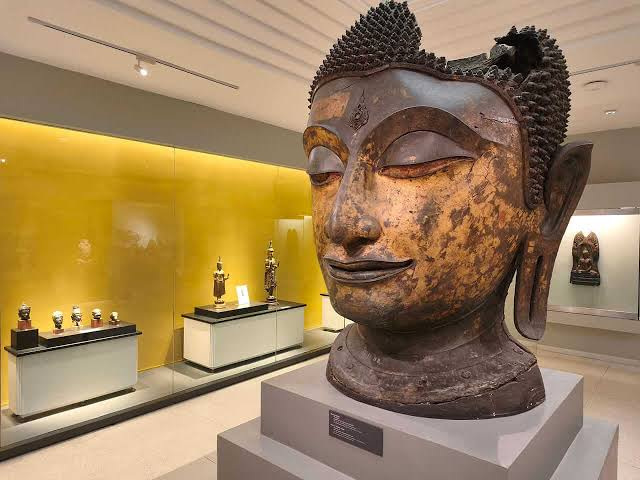
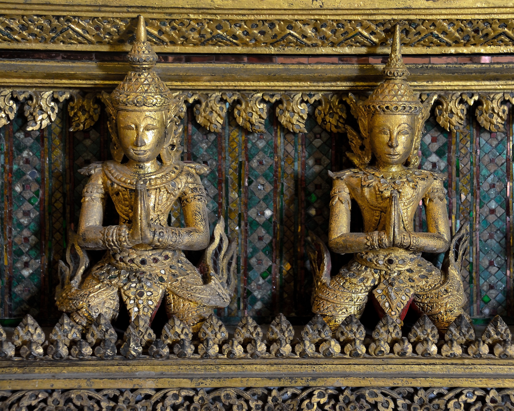
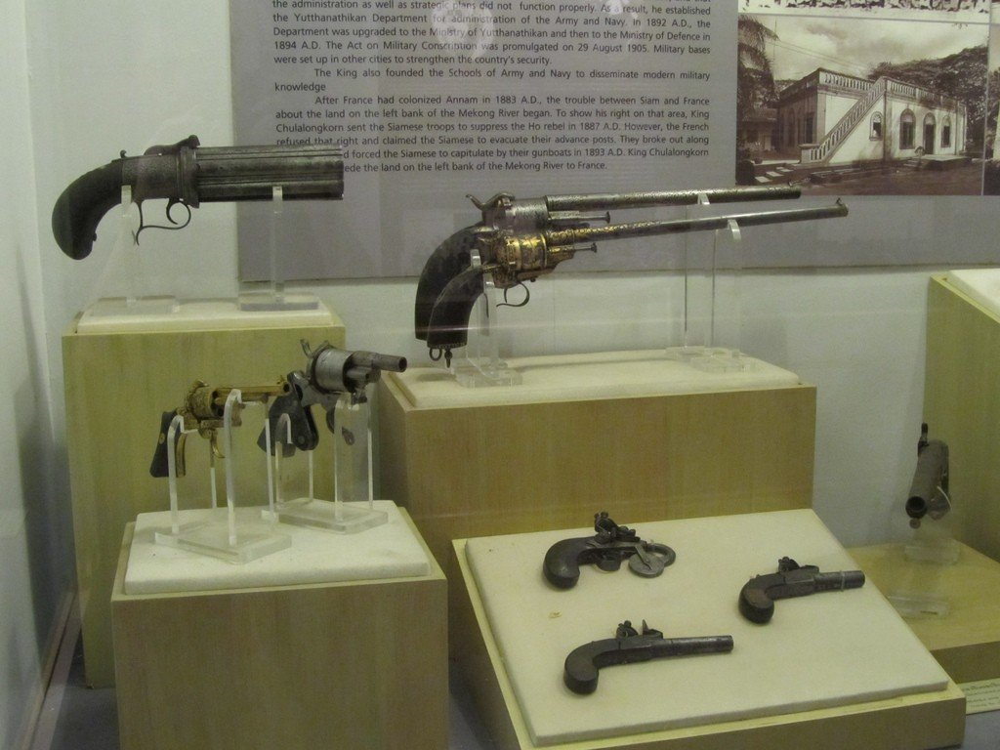
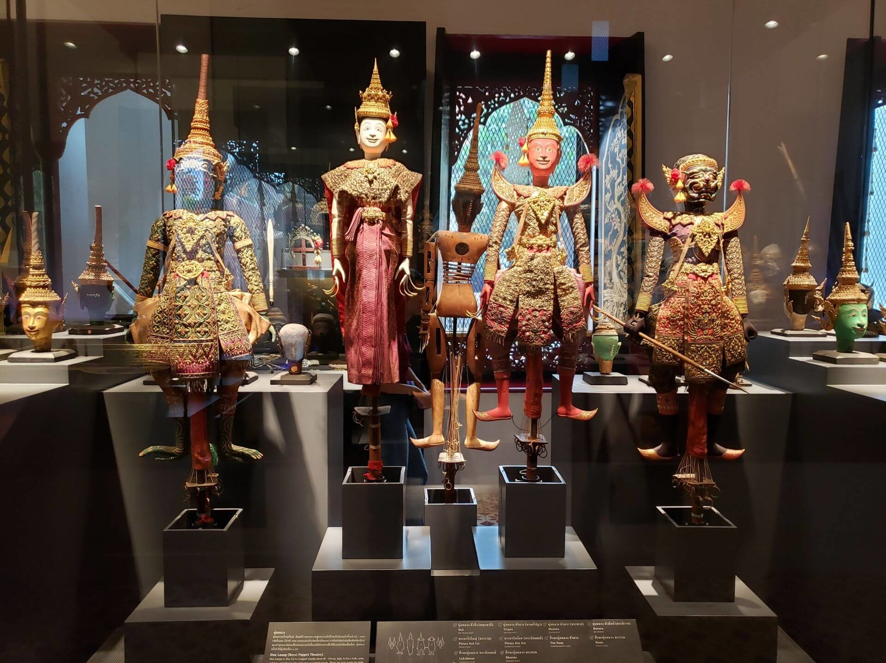
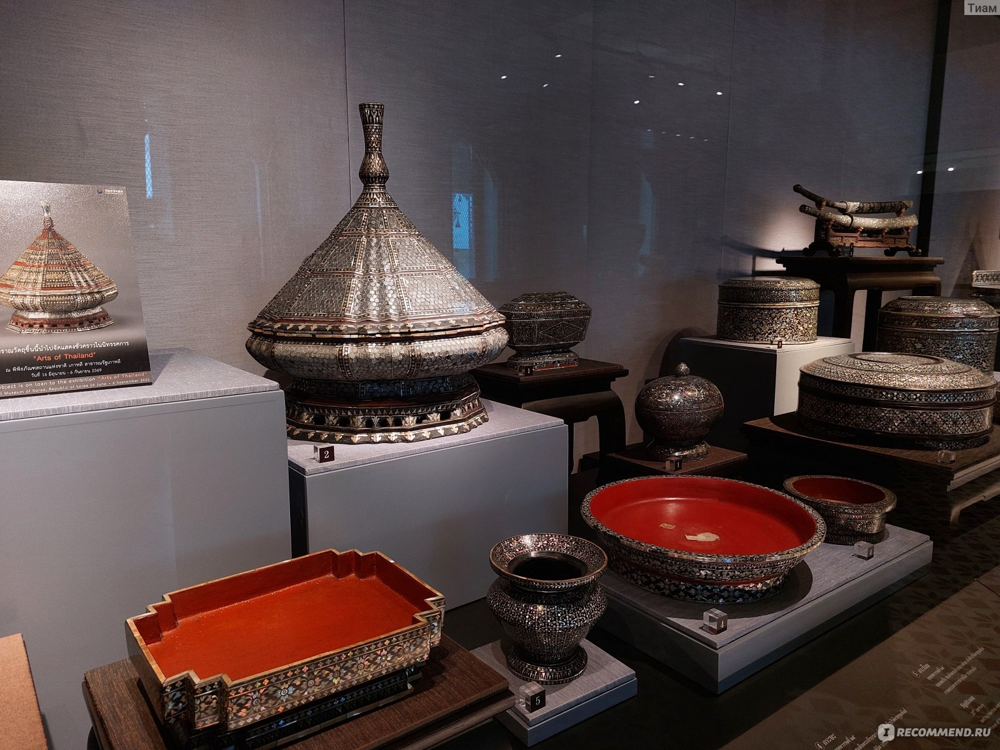
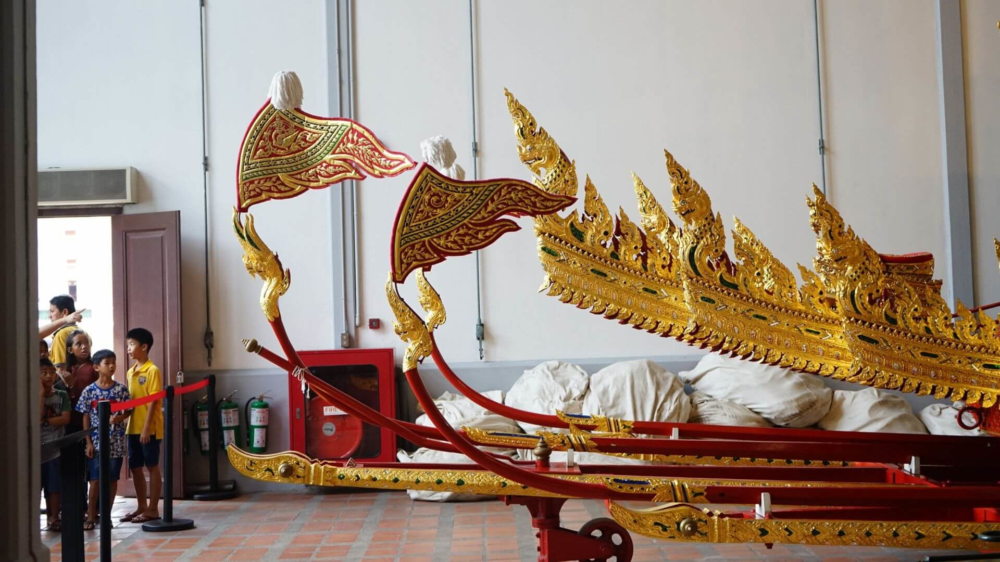
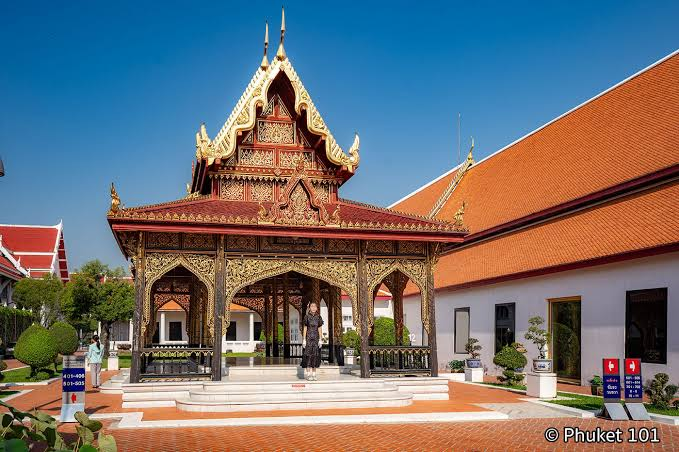

Национальный музей Бангкока — история и культура Таиланда

Национальный музей Бангкока — крупнейший музей Таиланда и одно из лучших мест для знакомства с историей, искусством и культурой страны. В огромном музейном комплексе собраны археологические находки, скульптуры, предметы религиозного искусства, оружие, керамика и королевские артефакты.
Музей расположен на территории бывшего Front Palace — дворца, который раньше принадлежал наследнику тайского престола. Поэтому сами здания музея являются частью исторического наследия Бангкока. Посещение Национального музея особенно интересно тем, кто хочет лучше понять Таиланд не только через храмы и современные достопримечательности, но и через его многовековую историю.
Где находится
Национальный музей находится в историческом центре Бангкока, в районе Phra Nakhon.
Адрес: 4 Na Phra That Road, Phra Borom Maha Ratchawang, Phra Nakhon, Bangkok 10200, Thailand. Музей расположен недалеко от Khao San Road, Большого дворца и храма Ват Арун.
Стоимость посещения
Для иностранных туристов вход обычно стоит 200 бат.
Для граждан Таиланда стандартный билет стоит 30 бат. Стоимость отдельных мероприятий и специальных выставок может отличаться. Перед посещением лучше проверить актуальную стоимость билетов и доступность отдельных залов, так как экспозиции музея могут временно закрываться на обслуживание.
Время работы
Национальный музей работает со среды по воскресенье с 08:30 до 16:00.
Понедельник и вторник — выходные дни. В отдельные государственные праздники музей может работать по специальному расписанию. Лучше приходить утром, поскольку музейный комплекс довольно большой и на его полноценный осмотр может потребоваться несколько часов.
Как добраться
Пешком
Если вы уже находитесь в районе исторического центра Бангкока, до музея можно дойти пешком от Большого дворца, Санам Луанг или Khao San Road.
Такси или Grab
Самый простой способ добраться до музея из других районов города — воспользоваться такси или приложением Grab. В историческом центре Бангкока бывают пробки, поэтому время поездки может сильно зависеть от ситуации на дорогах.
На речном транспорте
Можно воспользоваться лодкой по реке Чао Прайя и выйти на причале Tha Chang или Phra Arthit, после чего продолжить путь пешком. Такой вариант особенно удобен, если вы хотите объединить музей с прогулкой по историческому центру Бангкока.
Что посмотреть внутри
Национальный музей занимает большую территорию, поэтому внутри находится несколько отдельных зданий и выставочных залов. Коллекция охватывает огромный период — от древних цивилизаций до эпохи современного Таиланда.
История Таиланда

В музейных залах можно проследить развитие территории современного Таиланда от древних поселений и ранних государств до периода Сукхотай, Аюттхаи и современной тайской истории.
Экспозиции помогают понять, как менялись культура, религия, искусство и государственное устройство страны.
Особенно интересны археологические находки, которые позволяют увидеть историю Таиланда не только через письменные источники, но и через реальные предметы прошлого.
Буддийское искусство

Одно из главных направлений коллекции музея — буддийское искусство.
Здесь представлены многочисленные статуи Будды разных периодов и художественных школ Таиланда.
По экспонатам можно заметить, как менялись внешний вид и стилистика изображений Будды на протяжении веков.
Королевские артефакты

В музее хранятся предметы, связанные с тайской монархией и королевским двором.
Среди них можно увидеть церемониальные предметы, оружие, королевскую утварь и элементы придворной культуры.
Эти экспонаты позволяют представить, как выглядела жизнь тайского королевского двора в разные исторические периоды.
Традиционное оружие
 |
 |
В коллекции представлены различные виды традиционного оружия, использовавшегося в Таиланде.
Можно увидеть мечи, копья, щиты и церемониальное оружие.
Некоторые предметы отличаются очень сложным декоративным оформлением и одновременно являются произведениями искусства.
Керамика и предметы быта

Отдельное место в коллекции занимают керамика, посуда и предметы повседневной жизни.
Такие экспонаты позволяют увидеть, чем пользовались жители Таиланда в разные исторические эпохи.
Особенно интересны изделия, связанные с торговлей и культурными контактами Таиланда с другими странами Азии.
Королевские погребальные колесницы

Одними из самых впечатляющих экспонатов музея являются огромные королевские погребальные колесницы.
Они использовались во время важных королевских погребальных церемоний и отличаются огромными размерами и сложным декоративным оформлением.
Эти колесницы являются одними из самых необычных объектов во всём музейном комплексе.
Архитектура Front Palace

Сам музейный комплекс представляет собой историческую достопримечательность.
Он расположен на территории бывшего Front Palace, поэтому здесь можно увидеть старинные дворцовые здания и традиционную тайскую архитектуру.
Прогулка между выставочными залами является частью посещения музея.
Что находится рядом
Национальный музей находится в самом центре исторического Бангкока, поэтому вокруг него расположено большое количество важных достопримечательностей.
Большой дворец
Большой дворец находится недалеко от Национального музея. Это один из главных исторических комплексов Бангкока, поэтому эти две достопримечательности удобно посещать в один день.
Khao San Road находится относительно недалеко от музея. После нескольких часов в выставочных залах можно отправиться туда на прогулку, пообедать или продолжить знакомство с туристическим центром Бангкока.
Золотая гора находится восточнее музея. Эти места удобно объединить в маршрут по историческому центру Бангкока.
Ват Арун расположен на противоположном берегу Чао Прайя. После посещения музея можно отправиться к реке и продолжить прогулку на речном транспорте.
Важное для туристов
Планируйте несколько часов. Национальный музей занимает большую территорию, а коллекция состоит из большого количества экспонатов.
Не пытайтесь посмотреть всё слишком быстро. Лучше выбрать несколько основных залов и внимательно ознакомиться с ними.
Проверьте рабочие дни. Музей закрыт по понедельникам и вторникам.
Приходите утром. Утреннее посещение позволит спокойно осмотреть экспозиции до закрытия музея.
Следите за правилами фотографирования. В некоторых залах фотографировать отдельные экспонаты может быть запрещено.
Одевайтесь удобно. Во время посещения придётся много ходить как внутри зданий, так и между ними.
Сочетайте музей с другими достопримечательностями. Он находится в историческом центре, поэтому за один день можно посетить сразу несколько интересных мест.
Как лучше провести время в Национальном музее
Лучше всего выделить на музей первую половину дня, а после него продолжить прогулку по историческому центру Бангкока.
Например:
- 09:00 — приезд к Национальному музею;
- 09:15 — покупка билета и начало осмотра;
- 09:30 — археологические экспозиции;
- 10:30 — буддийское искусство и статуи Будды;
- 11:30 — королевские артефакты;
- 12:00 — осмотр королевских погребальных колесниц;
- 13:00 — прогулка по территории музея;
- 13:30 — обед;
- 14:30 — Большой дворец или прогулка по историческому центру;
- 17:00 — поездка к реке Чао Прайя;
- 18:00 — посещение Ват Арун или прогулка по набережной.
Такой маршрут позволяет совместить историю, культуру и архитектуру Бангкока, не пытаясь осмотреть весь музей за один короткий визит.
Что запомнить
Национальный музей Бангкока — лучшее место для тех, кто хочет глубже познакомиться с историей и культурой Таиланда. Здесь собраны древние археологические находки, статуи Будды, королевские предметы, оружие, керамика и другие исторические артефакты. Особого внимания заслуживают королевские погребальные колесницы и здания бывшего Front Palace. Если Ват Арун и Золотая гора позволяют познакомиться с религиозной архитектурой Таиланда, то Национальный музей помогает понять, откуда появилась эта культура и как она развивалась на протяжении веков. Лучше всего выделить на посещение несколько часов и объединить музей с прогулкой по историческому центру Бангкока.